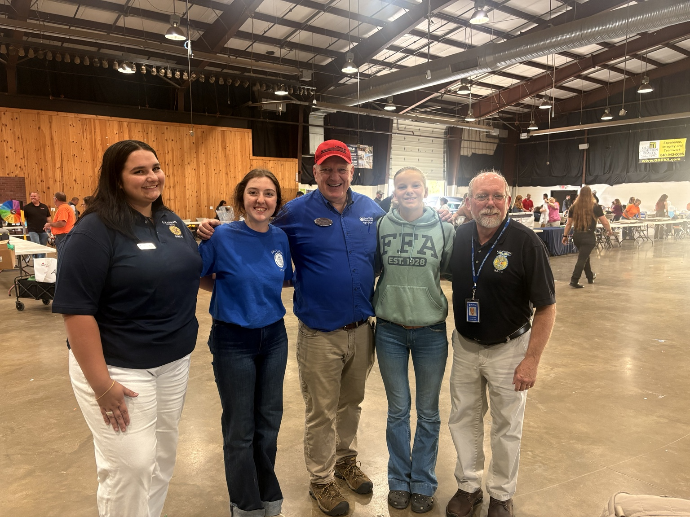

This is where Cultivating HER Curiosity documents the events, activities, partnerships, and people reached as the initiative grows.
Students reached
September 2026 • 4+ school districts
At Worlds of Work, Cultivating HER Curiosity shared opportunities in agriculture, pathways through Blue Ridge Community College, and the many ways students can build a future in the industry with 7th graders from more than four school districts.
HER Pillars: Education + Representation

October 2026
The next initiative brings agricultural curiosity directly to young people through an interactive experience and something they can take home to keep learning.
This page will be updated after the event with photos, the activity, and impact from the day.